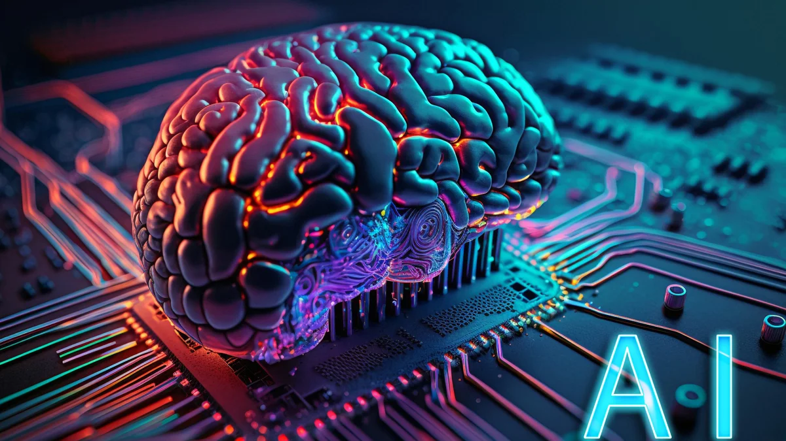

Gelişmiş Kullanım

Gelişmiş özellikler ve entegrasyonlar hakkında bilgi:
- Adım 1: Veri entegrasyonu
- Adım 2: Özelleştirilmiş raporlar oluşturma
- Adım 3: API kullanımı
Yapay zeka, insan zekasını taklit eden ve karmaşık görevleri yerine getiren bilgisayar sistemlerinin geliştirilmesiyle ilgilenen bir bilgisayar bilimi alanıdır. Yapay Zekâ, makinelerin öğrenme, anlama, problem çözme, dil işleme ve algılama gibi yeteneklere sahip olmasını sağlayarak, insan benzeri davranışlar sergilemesini amaçlar.
Belirli bir görevi yerine getirmek için tasarlanmış yapay zeka türüdür. Örneğin, sesli asistanlar (Siri, Alexa), öneri sistemleri (Netflix, YouTube) ve otonom araçlar bu kategoriye girer. ANI, belirli bir alanda oldukça başarılıdır ancak genel bir zekaya sahip değildir.
İnsan zekası düzeyinde genel bilgi ve beceriye sahip yapay zekadır. AGI, öğrenme ve adaptasyon kabiliyeti ile çeşitli görevleri başarıyla yerine getirebilir. Henüz tam anlamıyla AGI geliştirilmemiştir ve araştırma aşamasındadır.
İnsan zekası düzeyinde genel bilgi ve beceriye sahip yapay zekadır. AGI, öğrenme ve adaptasyon kabiliyeti ile çeşitli görevleri başarıyla yerine getirebilir. Henüz tam anlamıyla AGI geliştirilmemiştir ve araştırma aşamasındadır.
Bilgisayarların, verilere dayanarak otomatik olarak öğrenmesini sağlayan algoritmaların geliştirilmesi sürecidir. Makine öğrenimi, yapay zekanın önemli bir alt alanıdır ve genellikle büyük veri kümeleri ile çalışır.
Makine öğreniminin bir alt dalı olan derin öğrenme, çok katmanlı yapay sinir ağları kullanarak verilerden öğrenmeyi sağlar. Görüntü tanıma, konuşma tanıma ve doğal dil işleme gibi alanlarda oldukça etkilidir.
Bilgisayarların insan dilini anlaması, analiz etmesi ve üretmesi üzerine çalışır. Chatbotlar, dil çevirisi ve metin analizi gibi uygulamalarda kullanılır.
Yapay zekanın fiziksel robotlar üzerinde uygulanmasıdır. Otonom araçlar, endüstriyel robotlar ve insansı robotlar bu alana örnek olarak verilebilir.
ChatGBT, OpenAI tarafından geliştirilen büyük bir dil modelidir. GPT-4 mimarisi üzerine kuruludur ve metin tabanlı çeşitli görevlerde insan benzeri yanıtlar verebilen yapay zeka modelidir. Bu tür modeller, doğal dil işleme (NLP) teknikleri kullanarak metinleri anlar ve oluşturur. ChatGBT, soruları yanıtlamak, metin oluşturmak, çeviri yapmak, özetleme yapmak ve daha pek çok dil tabanlı görevi yerine getirebilir.
ChatGBT'yi kullanabileceğiniz çeşitli platformlar ve araçlar bulunmaktadır. Örneğin:
OpenAI’nin kendi web sitesi üzerinden veya ChatGPT gibi belirli arayüzler üzerinden kullanabilirsiniz.
OpenAI'nin API'sini kullanarak kendi uygulamalarınıza entegre edebilirsiniz.
Bazı üçüncü parti mobil uygulamalar da bu teknolojiyi kullanabilir.
Kullanmak istediğiniz platformda bir hesap oluşturmanız veya giriş yapmanız gerekebilir.
Metin tabanlı bir giriş kutusuna soru sormanız veya belirli bir görev vermeniz yeterlidir. Örneğin: "Bir şiir yazabilir misin?" "Bir iş mektubu nasıl yazılır?" "Dünya tarihi hakkında bilgi ver."
ChatGBT size bir yanıt verecektir. Yanıtları değerlendirebilir, gerekirse daha fazla ayrıntı isteyebilir veya yeni sorular sorabilirsiniz.
Eğer bir geliştiriciyseniz, OpenAI API'sini kullanarak ChatGBT'yi kendi uygulamalarınıza entegre edebilirsiniz. Bunun için: API Anahtarı Alın: OpenAI’nin web sitesinden bir API anahtarı alın. Kod Yazın: API'yi çağırmak için gerekli olan kodları yazın. Python gibi programlama dillerini kullanarak RESTful API istekleri oluşturabilirsiniz.

Yapay zeka, son yıllarda hızla gelişen ve birçok sektörde devrim yaratan bir teknoloji haline gelmiştir. Bilgisayarların ve makinelerin insan benzeri zeka sergilemesini sağlayan bu teknoloji, geniş bir yelpazede uygulama alanına sahiptir. İşte yapay zekanın kullanım alanlarından bazıları:
Yapay zeka, sağlık hizmetlerinde teşhis ve tedavi süreçlerini iyileştirmek için kullanılmaktadır. Tıbbi görüntüleme, hastalık teşhisi ve ilaç geliştirme alanlarında Yapay Zekâ, doktorlara ve araştırmacılara büyük fayda sağlamaktadır. Örneğin, görüntü işleme algoritmaları, röntgen ve MR görüntülerinde tümörleri erken aşamada tespit edebilir.
Otonom araçlar, yapay zekanın otomotiv sektöründeki en önemli uygulamalarından biridir. Sensörler, kameralar ve yapay zeka algoritmaları sayesinde araçlar, çevrelerini algılayarak sürücüsüz seyahat edebilirler. Bu teknolojinin trafik kazalarını azaltma ve ulaşım verimliliğini artırma potansiyeli büyüktür.
Finansal kurumlar, dolandırıcılığı tespit etmek, kredi riskini değerlendirmek ve müşteri hizmetlerini iyileştirmek için yapay zekayı kullanmaktadır. Özellikle makine öğrenme algoritmaları, büyük veri setlerini analiz ederek yatırım stratejileri ve piyasa trendleri konusunda tahminlerde bulunabilir.
Yapay Zekâ, perakende sektöründe kişiselleştirilmiş alışveriş deneyimleri sunmak için kullanılmaktadır. Müşteri davranışlarını analiz ederek, kişiye özel ürün önerileri sunan algoritmalar, satışları artırmada önemli rol oynamaktadır. Ayrıca, envanter yönetimi ve tedarik zinciri optimizasyonunda da yapay zeka önemli katkılar sağlamaktadır.
Eğitimde yapay zeka, öğrencilerin öğrenme deneyimlerini zenginleştirmek için kullanılmaktadır. Akıllı eğitim sistemleri, öğrencilerin öğrenme hızına ve tarzına göre uyarlanabilir ders içerikleri sunar. Ayrıca, öğretmenlere öğrencilerin performansını izleme ve ihtiyaçlarına göre destek sağlama imkanı verir.
Yapay Zekâ, tarım sektöründe verimliliği artırmak ve sürdürülebilir tarım uygulamalarını desteklemek için kullanılmaktadır. Tarım makineleri, Yapay Zekâ sayesinde tarlaları otomatik olarak ekebilir, sulayabilir ve hasat edebilir. Ayrıca, hava durumu ve toprak verilerini analiz ederek çiftçilere optimum ekim zamanları ve gübreleme stratejileri konusunda rehberlik edebilir.
Güvenlik ve savunma alanında yapay zeka, gözetim sistemlerinden siber güvenliğe kadar geniş bir yelpazede kullanılmaktadır. Yapay Zekâ tabanlı analiz sistemleri, güvenlik kameralarından gelen görüntüleri gerçek zamanlı olarak analiz ederek şüpheli davranışları tespit edebilir. Ayrıca, siber saldırılara karşı savunma sistemlerinin geliştirilmesinde de önemli rol oynamaktadır.
İmalat sektöründe yapay zeka, üretim süreçlerini otomatikleştirmek ve optimize etmek için kullanılmaktadır. Robotlar ve otomasyon sistemleri, Yapay Zekâ algoritmaları sayesinde daha esnek ve verimli hale gelmiştir. Bu sayede, üretim hattındaki hatalar azaltılmakta ve ürün kalitesi artırılmaktadır.
Medya ve eğlence sektöründe yapay zeka, içerik oluşturma, kişiselleştirme ve öneri sistemlerinde kullanılmaktadır. Müzik ve video platformları, kullanıcıların beğenilerine göre içerik önerileri sunarak kullanıcı deneyimini iyileştirmektedir. Ayrıca, Yapay Zekâ tabanlı araçlar sayesinde film ve video oyunları gibi içeriklerin üretim süreçleri hızlanmaktadır.
Enerji sektöründe yapay zeka, enerji üretimi ve tüketimi optimizasyonunda kullanılmaktadır. Akıllı şebekeler, enerji talebini ve arzını dengelemek için Yapay Zekâ algoritmalarını kullanır. Ayrıca, yenilenebilir enerji kaynaklarının verimli bir şekilde yönetilmesi ve depolanması konusunda da Yapay Zekâ önemli katkılar sağlamaktadır.
Yapay zekanın kullanım alanları giderek genişlemekte ve her geçen gün yeni uygulama alanları ortaya çıkmaktadır. Bu teknolojinin, hayatımızın birçok yönünü iyileştirerek daha verimli, güvenli ve sürdürülebilir bir dünya yaratma potansiyeli büyüktür.
Gelişmiş özellikler ve entegrasyonlar hakkında bilgi: